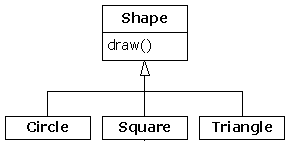

Thinking in Java, 2nd edition, Revision 11
[ Предыдущая глава ] [ Оглавление ] [ Содержание ] [ Индекс ] [ Следующая глава ]
Идея механизма идентификации типа времени выполнения (RTTI - run-time type identification) кажется довольно простой вначале: он позволяет Вам определить точный тип объекта только по ссылке на базовый тип.
Однако, необходимость RTTI раскрывает огромное количество интересных (и зачастую запутанных) решений ОО дизайна, и, ставит фундаментальные вопросы - как Вам следует строить свои программы.
Эта глава показывает пути, которые Java предоставляет для получения информации об объекте и классах во время выполнения. Она дает две формы: “традиционный” механизм RTTI, который предполагает, что все типы у Вас доступны во время компиляции и выполнения, а также механизм “рефлексии”, который позволяет Вам получить информацию о классе исключительно во время выполнения. Вначале будет описан “традиционный” механизм, а затем будет обсуждение рефлексии.
Рассмотрите пример иерархии классов, которые используют полиморфизм. Общий тип - это базовый класс Shape, и классы - наследники - Circle, Square и Triangle:

Это типичная диаграмма иерархии классов, с базовым классом на вершине и базовыми классами, растущими вниз. Стандартная задача в объектно-ориентированном программировании это манипуляции ссылкой на базовый тип (в нашем случае Shape) в больших объемах кода, так, что если Вы решите расширить программу за счет добавления нового класса (например, Rhomboid, наследуемый от Shape), больших изменений в коде не потребуется. В этом примере, методом динамического связывания в интерфейсе Shape является draw( ), так что цель клиентского программиста - вызывать метод draw( ) по ссылке на базовый класс Shape. Метод draw( ) перекрывается во всех наследуемых классах, и т.к. это динамически связанный метод, в результате все будет работать правильно, даже несмотря на то, что метод вызывается через ссылку на базовый класс Shape. И это - полиморфизм.
Итак Вы, в большинстве случаев, создаете объект (Circle, Square или Triangle), приводите его к базовому типу Shape (забывая об особенностях этого объекта), и используете эту анонимную ссылку на Shape в остальной части программы.
Вот краткий пример полиморфизма и приведения к базовому типу, показывающий то, что было описано выше:
//: c12:Shapes.java
import java.util.*;
class Shape {
void draw() {
System.out.println(this + ".draw()");
}
}
class Circle extends Shape {
public String toString() { return "Circle"; }
}
class Square extends Shape {
public String toString() { return "Square"; }
}
class Triangle extends Shape {
public String toString() { return "Triangle"; }
}
public class Shapes {
public static void main(String[] args) {
ArrayList s = new ArrayList();
s.add(new Circle());
s.add(new Square());
s.add(new Triangle());
Iterator e = s.iterator();
while(e.hasNext())
((Shape)e.next()).draw();
}
} ///:~
Базовый класс содержит метод draw( ), который неявно использует toString( ) для печати идентификатора класса подстановкой параметра this в функцию System.out.println( ). Если эта функция встречает объект, она автоматически вызывает метод toString( ), чтобы создать строковое представление объекта.
Каждый из наследуемых классов перекрывает метод toString( ) (из объекта Object) так, что draw( ) в любом случае печатает разные данные. В методе main( ), различные типы Shape создаются и добавляются в ArrayList. Именно в этом месте происходит приведение к базовому типу потому, что ArrayList хранит только объекты типа Object. Так как все в Java (за исключением примитивов) является типом Object, ArrayList может хранить также объекты типа Shape. Однако, при привведении к базовому типу Object, теряется специальная информация и то, что они имеют тип Shape. В ArrayList, они имеют тип Object.
В том месте, где Вы достаете элемент из ArrayList с помощью next( ), появляется небольшое оживление. Так как ArrayList хранит только тип Object, next( ) возвращает ссылку на тип Object. Но мы знаем, что, на самом деле, это ссылка на объект типа Shape, и хотим вызвать метод объекта Shape. Итак, нам необходимо приведение к типу Shape. Мы делаем это, используя стандартный метод приведения к типу: “(Shape)”. Это - основная, базовая форма RTTI. Кроме того, в Java все приведения проверяются во время выполнения на корректность. Это в действительности и есть RTTI: идентификация типа объекта во время выполнения.
В этом случае, приведение RTTI является только частичным: тип Object приводится к типу Shape, но не приводится к Circle, Square или Triangle. Это происходит потому, что единственная вещь, которую мы хотим знать, это то, что ArrayList заполнен объектами типа Shape. Во время компиляции это реализуется по Вашему усмотрению, во время выполнения это обеспечивает механизм приведения типа.
Итак полиморфизм работает и нужный метод, вызываемый из Shape определяется в зависимости от того, является ли он ссылкой на Circle, Square или Triangle. И вообще это так и должно быть; Вы хотите, чтобы основной Ваш код знал как можно меньше об особенностях объекта, и просто общался с основными представлениями группы объектов (в нашем случае Shape). В результате Ваш код будет проще читаться, писаться, исправляться, а Ваши намерения и планы будут проще в реализации, понимании и изменении. Итак, полиморфизм - основная задача объектно-ориентированного программирования.
Но если у Вас есть специальная задача, которая существенно упрощается, если Вы знаете точный тип базовой ссылки на объект? Например, представьте, что Вы хотите дать пользователям возможность подсвечивать все формы (Shape), определенного типа перекрашивая их в пурпурный цвет. В этом случае, они смогут найти все треугольники на экране, подсвечивая их. Это выполняет RTTI: Вы можете спросить у ссылки на Shape точный тип объекта, на который она ссылается.
Чтобы понять, как RTTI работает в Java, Вы должны вначале узнать, как информация о типе представляется во время выполнения. Это реализуется с помощью специального типа объекта называемого Class, который содержит информацию о классе. (Иногда он называется meta-class.) На самом деле, Class используется для создания всех “регулярных” объектов Вашего класса.
Объект Class существует для каждого класса, который является частью Вашей программы. Т.е., каждый раз, когда Вы пишите и компилируете новый класс, также создается единичный объект Class (и записывается в файл, имеющий идентичное имя и расширение .class). Во время выполнения, когда Вы хотите создать объект какого-то класса, виртуальная машина Java (Java Virtual Machine - JVM), которая выполняет Вашу программу сначала проверяет загружен ли объект Class этого класса. Если нет, JVM загружает его, находя файл .class с именем этого класса. Таким образом, программа на Java не загружается полностью перед запуском, и это отличает Java от других языков.
Как только объект Class для этого типа объекта находится в памяти, он используется для создания всех объектов этого типа.
Если Вам это кажется неясным или Вы в это не верите - вот демонстрационная программа, подтверждающая это:
//: c12:SweetShop.java
// Исследование механизма загрузки класса.
class Candy {
static {
System.out.println("Loading Candy");
}
}
class Gum {
static {
System.out.println("Loading Gum");
}
}
class Cookie {
static {
System.out.println("Loading Cookie");
}
}
public class SweetShop {
public static void main(String[] args) {
System.out.println("inside main");
new Candy();
System.out.println("After creating Candy");
try {
Class.forName("Gum");
} catch(ClassNotFoundException e) {
e.printStackTrace(System.err);
}
System.out.println(
"After Class.forName(\"Gum\")");
new Cookie();
System.out.println("After creating Cookie");
}
} ///:~
Каждый из классов Candy, Gum и Cookie содержит предложение static, которое выполняется, когда класс загружается впервый раз. Информация распечатается, когда произойдет загрузка класса. В методе main( ), создание объектов разделяется функциями печати, чтобы помочь определить момент их загрузки.
Особенно интересна строка:
Class.forName("Gum");
Этот метод является статическим членом объекта Class (которому принадлежат все объекты Class). Объект Class является таким же объектом, как и все остальные, так что Вы можете манипулировать ссылкой на него. (Это именно то, что делает загрузчик.) Один из спопобов получить ссылку на объект Class это метод forName( ), которое берет строку String, содержащую текстовое имя (следите за правильным написанием имени класса и не забывайте, что регистр имеет значение!) класса, на который Вам нужна ссылка.. Этот медтод возвращает ссылку на объект Class.
Результаты работы этой программы на консоли JVM:
inside main
Loading Candy
After creating Candy
Loading Gum
After Class.forName("Gum")
Loading Cookie
After creating Cookie
Вы видите, что каждый объект Class загружается только, когда он нужен, и статические and the static инициализации выполняются сразу после загрузки класса.
Java предоставляет еще один путь для получения ссылки на объект Class, с помощью литералов объекта class. В приведенной выше программе это могло бы выглядеть так:
Gum.class;
это не только проще, но еще и безопасней т.к. это выражение проверяется во время компиляции. Этот способ не использует вызова метода, а также, является более действенным.
Литералы объектов Class работают с регулярными классами, а также с интерфейсами, массивами и примитивными типами. В дополнение, существует стандартное поле называемое TYPE, которое существует для каждого примитивного класса-оболочки. Поле TYPE создает ссылку на объект Class для соответствующего примитивного класса, следующим образом:
Я предпочитаю использовать “.class” версию, т.к. она лучше согласуется с регулярными классами.
Пока Вы видели две формы RTTI включающие:
В C++, классическое приведение “(Shape)” не использует RTTI. В этом случае компилятору сообщается, что объект просто имеет новый тип. В языке Java, который выполняет проверку типа, это приведение часто называется “безопасное нисходящее приведение типа.” Причина использования термина “нисходящее приведение” является историческим соглашением диаграммы иерархии классов. Если приведение типа Circle к типу Shape является восходящим, то приведение типа Shape к типу Circle является нисходящим. Однако Вы знаете, что класс Circle является еще и классом Shape, и компилятор свободно позволяет присвоение с восходящим приведением типа, но Вы не знаете, что класс Shape обязательно является классом Circle, так что компилятор не позволит выполнить присвоение с нисходящим приведением без использования явного приведения.
В Java существует третья форма RTTI. Это ключевое слово instanceof которое говорит Вам, что объект является экземпляром конкретного типа. Оно возвращает значение boolean, так, что Вы используете его в форме вопроса следующим образом:
if(x instanceof Dog) ((Dog)x).bark();
Приведенное выше выражение if проверяет, является ли объект x экземпляром класса Dog перед приведением объекта x к типу Dog. Это важно - использовать instanceof перед нисходящим приведением, когда у Вас нет ничего, что могло бы дать информацию о типе объекта; в противном случае приведение может завершится выбросом исключения ClassCastException.
Обычно, Вы можете искать один типом (например, треугольниками, чтобы окрасить их в пурпурный), но Вы можете просто повесить ярлычки на все объекты используя instanceof. Представьте, что у Вас есть группа классов Pet:
//: c12:Pets.java
class Pet {}
class Dog extends Pet {}
class Pug extends Dog {}
class Cat extends Pet {}
class Rodent extends Pet {}
class Gerbil extends Rodent {}
class Hamster extends Rodent {}
class Counter { int i; } ///:~
Класс Counter используется для хранения количества любых классов типа Pet. Вы можете считать, что это переменная Integer которая может быть изменена.
Используя instanceof, все классы Pet могут быть подсчитаны:
//: c12:PetCount.java
// Использование instanceof.
import java.util.*;
public class PetCount {
static String[] typenames = {
"Pet", "Dog", "Pug", "Cat",
"Rodent", "Gerbil", "Hamster",
};
// Исключение выбрасывается на консоль:
public static void main(String[] args)
throws Exception {
ArrayList pets = new ArrayList();
try {
Class[] petTypes = {
Class.forName("Dog"),
Class.forName("Pug"),
Class.forName("Cat"),
Class.forName("Rodent"),
Class.forName("Gerbil"),
Class.forName("Hamster"),
};
for(int i = 0; i < 15; i++)
pets.add(
petTypes[
(int)(Math.random()*petTypes.length)]
.newInstance());
} catch(InstantiationException e) {
System.err.println("Cannot instantiate");
throw e;
} catch(IllegalAccessException e) {
System.err.println("Cannot access");
throw e;
} catch(ClassNotFoundException e) {
System.err.println("Cannot find class");
throw e;
}
HashMap h = new HashMap();
for(int i = 0; i < typenames.length; i++)
h.put(typenames[i], new Counter());
for(int i = 0; i < pets.size(); i++) {
Object o = pets.get(i);
if(o instanceof Pet)
((Counter)h.get("Pet")).i++;
if(o instanceof Dog)
((Counter)h.get("Dog")).i++;
if(o instanceof Pug)
((Counter)h.get("Pug")).i++;
if(o instanceof Cat)
((Counter)h.get("Cat")).i++;
if(o instanceof Rodent)
((Counter)h.get("Rodent")).i++;
if(o instanceof Gerbil)
((Counter)h.get("Gerbil")).i++;
if(o instanceof Hamster)
((Counter)h.get("Hamster")).i++;
}
for(int i = 0; i < pets.size(); i++)
System.out.println(pets.get(i).getClass());
for(int i = 0; i < typenames.length; i++)
System.out.println(
typenames[i] + " quantity: " +
((Counter)h.get(typenames[i])).i);
}
} ///:~
Существуют некоторые ограничения на использование instanceof: Вы можете сравнивать только именованные типы, но не объекты Class. В примере, приведенном выше, Вам может показаться, что это довольно скучно набирать все выражения instanceof, и Вы будете правы. Но не существует способа для правильной автоматизации instanceof созданием массива ArrayList объектов Class и сравнения их. Это не такое сильное ограничение, как Вы можете представить, т.к. Вы, в конечном счете, поймете, что Ваш замысел не будет осуществлен, если Вы прекратите писать множество этих выражений instanceof.
Конечно, этот пример был придуман, Вы, возможно, будете размещать статический член данных в каждом типе и увеличивать его в конструкторе, чтобы сохранить их количество. Вы вполне можете сделать что-то в этом духе, если у Вас есть исходные тексты класса и Вы можете менять их.. Но т.к. это бывает не всегда, Вы можете просто использовать RTTI.
Интересно посмотреть, как будет выглядеть пример PetCount.java, переписанный с использованием литералов класса. В результате код получается гораздо лучше:
//: c12:PetCount2.java
// Использование литералов класса.
import java.util.*;
public class PetCount2 {
public static void main(String[] args)
throws Exception {
ArrayList pets = new ArrayList();
Class[] petTypes = {
// Литералы класса:
Pet.class,
Dog.class,
Pug.class,
Cat.class,
Rodent.class,
Gerbil.class,
Hamster.class,
};
try {
for(int i = 0; i < 15; i++) {
// Смещение на 1, чтобы исключить класс Pet.class:
int rnd = 1 + (int)(
Math.random() * (petTypes.length - 1));
pets.add(
petTypes[rnd].newInstance());
}
} catch(InstantiationException e) {
System.err.println("Cannot instantiate");
throw e;
} catch(IllegalAccessException e) {
System.err.println("Cannot access");
throw e;
}
HashMap h = new HashMap();
for(int i = 0; i < petTypes.length; i++)
h.put(petTypes[i].toString(),
new Counter());
for(int i = 0; i < pets.size(); i++) {
Object o = pets.get(i);
if(o instanceof Pet)
((Counter)h.get("class Pet")).i++;
if(o instanceof Dog)
((Counter)h.get("class Dog")).i++;
if(o instanceof Pug)
((Counter)h.get("class Pug")).i++;
if(o instanceof Cat)
((Counter)h.get("class Cat")).i++;
if(o instanceof Rodent)
((Counter)h.get("class Rodent")).i++;
if(o instanceof Gerbil)
((Counter)h.get("class Gerbil")).i++;
if(o instanceof Hamster)
((Counter)h.get("class Hamster")).i++;
}
for(int i = 0; i < pets.size(); i++)
System.out.println(pets.get(i).getClass());
Iterator keys = h.keySet().iterator();
while(keys.hasNext()) {
String nm = (String)keys.next();
Counter cnt = (Counter)h.get(nm);
System.out.println(
nm.substring(nm.lastIndexOf('.') + 1) +
" quantity: " + cnt.i);
}
}
} ///:~
Здесь, массив typenames был удален за счет того, что строка имени типа достается из объекта Class. Заметьте, что система может различать классы и интерфейсы.
Вы также видите, что создание petTypes не нужно окружать блоком try, т.к. оно вычисляется во время компиляции, и, потому, не может выбросить никаких исключений, в отличие от метода Class.forName( ).
Когда объекты Pet динамически созданы, Вы видите, что случайное число ограничено 1 и petTypes.length и не включает 0. Это потому, что 0 ссылается на Pet.class, и, наверное, базовый класс Pet нам не интересен. Однако, т.к. Pet.class является частью petTypes, в результате, все классы Pet посчитаны.
Метод объекта Class isInstance предоставляет способ динамического вызова оператора instanceof. Таким образом, все эти скучные выражения instanceof могут быть удалены, что и показано в примере PetCount:
//: c12:PetCount3.java
// Использование isInstance().
import java.util.*;
public class PetCount3 {
public static void main(String[] args)
throws Exception {
ArrayList pets = new ArrayList();
Class[] petTypes = {
Pet.class,
Dog.class,
Pug.class,
Cat.class,
Rodent.class,
Gerbil.class,
Hamster.class,
};
try {
for(int i = 0; i < 15; i++) {
// Смещение на 1, чтобы исключить класс Pet.class:
int rnd = 1 + (int)(
Math.random() * (petTypes.length - 1));
pets.add(
petTypes[rnd].newInstance());
}
} catch(InstantiationException e) {
System.err.println("Cannot instantiate");
throw e;
} catch(IllegalAccessException e) {
System.err.println("Cannot access");
throw e;
}
HashMap h = new HashMap();
for(int i = 0; i < petTypes.length; i++)
h.put(petTypes[i].toString(),
new Counter());
for(int i = 0; i < pets.size(); i++) {
Object o = pets.get(i);
// Использование isInstance для исключения индивидуальных
// выражений instanceof:
for (int j = 0; j < petTypes.length; ++j)
if (petTypes[j].isInstance(o)) {
String key = petTypes[j].toString();
((Counter)h.get(key)).i++;
}
}
for(int i = 0; i < pets.size(); i++)
System.out.println(pets.get(i).getClass());
Iterator keys = h.keySet().iterator();
while(keys.hasNext()) {
String nm = (String)keys.next();
Counter cnt = (Counter)h.get(nm);
System.out.println(
nm.substring(nm.lastIndexOf('.') + 1) +
" quantity: " + cnt.i);
}
}
} ///:~
Вы видите, что метод isInstance( ) исключает использование выражения instanceof. В дополнение, это означает также, что Вы можете добавить новые типы класса Pet просто изменив массив petTypes; остальная часть программы не требует никаких изменений (в отличие от использования выражения instanceof).
При получении информации о типе существует важное различие между любой формой instanceof (это instanceof либо isInstance( ), которые приводят к одинаковым результатам) и прямым сравнением объектов Class. Вот пример, демонстрирующий эту разницу:
//: c12:FamilyVsExactType.java
// Разница между instanceof и class
class Base {}
class Derived extends Base {}
public class FamilyVsExactType {
static void test(Object x) {
System.out.println("Testing x of type " +
x.getClass());
System.out.println("x instanceof Base " +
(x instanceof Base));
System.out.println("x instanceof Derived " +
(x instanceof Derived));
System.out.println("Base.isInstance(x) " +
Base.class.isInstance(x));
System.out.println("Derived.isInstance(x) " +
Derived.class.isInstance(x));
System.out.println(
"x.getClass() == Base.class " +
(x.getClass() == Base.class));
System.out.println(
"x.getClass() == Derived.class " +
(x.getClass() == Derived.class));
System.out.println(
"x.getClass().equals(Base.class)) " +
(x.getClass().equals(Base.class)));
System.out.println(
"x.getClass().equals(Derived.class)) " +
(x.getClass().equals(Derived.class)));
}
public static void main(String[] args) {
test(new Base());
test(new Derived());
}
} ///:~
Метод test( ) выполняет проверку типа, используя обе формы instanceof. Затем получает ссылку на объект Class и использует выражение "==" и equals( ) для проверки эквивалентности объектов Class. Вот результаты:
Testing x of type class Base x instanceof Base true x instanceof Derived false Base.isInstance(x) true Derived.isInstance(x) false x.getClass() == Base.class true x.getClass() == Derived.class false x.getClass().equals(Base.class)) true x.getClass().equals(Derived.class)) false Testing x of type class Derived x instanceof Base true x instanceof Derived true Base.isInstance(x) true Derived.isInstance(x) true x.getClass() == Base.class false x.getClass() == Derived.class true x.getClass().equals(Base.class)) false x.getClass().equals(Derived.class)) true
Конечно, instanceof и isInstance( ) выдают абсолютно идентичные результаты, также как и equals( ) и "==". Однако, исход работы разный. В общем представлении типа, instanceof говорит, “является ли объект этим классом, либо наследником этого класса?” С другой стороны, если Вы сравниваете объекты Class, используя "==", наследование не имеет значения, это либо точно такой же тип, либо нет.
Java выполняет RTTI, используя объект Class, даже если Вы делаете что-то похожее на приведение. Класс Class также предоставляет Вам несколько путей использования RTTI.
Вначале, Вы должны получить ссылку на соответствующий объект Class. Один способ сделать это, как показано в предыдущем примере, использовать строку и метод Class.forName( ). Это удобно потому, что Вам не нужен объект того типа для получения ссылки на Class. Однако, если у Вас уже есть объект того типа, который Вам нужен, то Вы можете получить ссылку на Class вызовом метода, который является частью базового класса Object: getClass( ). Он возвращает ссылку на Class представляя действительный тип объекта. Объект Class содержит много интересных методов, показанных в следующем примере:
//: c12:ToyTest.java
// Тестирование класса Class.
interface HasBatteries {}
interface Waterproof {}
interface ShootsThings {}
class Toy {
// Закоментируйте следующий конструктор
// по умолчанию и увидите
// NoSuchMethodError на(*1*)
Toy() {}
Toy(int i) {}
}
class FancyToy extends Toy
implements HasBatteries,
Waterproof, ShootsThings {
FancyToy() { super(1); }
}
public class ToyTest {
public static void main(String[] args)
throws Exception {
Class c = null;
try {
c = Class.forName("FancyToy");
} catch(ClassNotFoundException e) {
System.err.println("Can't find FancyToy");
throw e;
}
printInfo(c);
Class[] faces = c.getInterfaces();
for(int i = 0; i < faces.length; i++)
printInfo(faces[i]);
Class cy = c.getSuperclass();
Object o = null;
try {
// Требуется конструктор по умолчанию:
o = cy.newInstance(); // (*1*)
} catch(InstantiationException e) {
System.err.println("Cannot instantiate");
throw e;
} catch(IllegalAccessException e) {
System.err.println("Cannot access");
throw e;
}
printInfo(o.getClass());
}
static void printInfo(Class cc) {
System.out.println(
"Class name: " + cc.getName() +
" is interface? [" +
cc.isInterface() + "]");
}
} ///:~
Вы видите, что классFancyToy является очень запутанным, т.к. он наследуется от Toy и реализует интерфейсы HasBatteries, Waterproof и ShootsThings. В методе main( ), создается ссылка на Class и инициализируется классом FancyToy Class с помощью forName( ) внутри соответствующего блока try.
Метод объекта Class.getInterfaces( ) возвращает массив объектов Class представляющих интерфейсы, содержащиеся в интересующем нас объекте Class.
Если у Вас есть объект Class, Вы можете узнать у него о непосредственном базовом классе, используя метод getSuperclass( ). Он, конечно, возвращает ссылку на Class, которую в дальнейшем Вы можете использовать для получения информации. Это значит, что во время выполнения, Вы можете определить всю иерархию классов.
Метод newInstance( ) объекта Class может, вначале, показаться еще одним способом дублирования объекта, как это делает метод clone( ). Однако, с помощью newInstance( ), Вы можете создавать объекты без существующего объекта, как показано здесь, объект Toy не существует—только указатель cy, который является ссылкой на объект Class. Это - способ реализовать “виртуальный конструктор”, который позволяет Вам сказать “Я не знаю точно какого типа объект, но я корректно его создаю”. В примере, приведенном выше, cy - просто ссылка на Class, без всякой дополнительной информации во время компиляции. И когда Вы создаете новый экземпляр, Вам возвращается ссылка на Object. Но эта ссылка указывает на объект Toy. Конечно, перед тем как Вы сможете получить п доступ к элементам класса, отличным от реализованных в классе Object, Вам нужно его немного исследовать, и сделать пребразование типа. В дополнение ко всему, класс, созданный с помощью newInstance( ) должен иметь конструктор по умолчанию. В следующем разделе, Вы увидите, как динамически создавать объекты классов, используя API рефлексии в Java.
Последний метод в тексте программы это printInfo( ), который берет ссылку класса Class получает его имя с помощью getName( ), а затем определяет, является ли он интерфейсом с помощью функции isInterface( ).
Результаты работы программы:
Class name: FancyToy is interface? [false] Class name: HasBatteries is interface? [true] Class name: Waterproof is interface? [true] Class name: ShootsThings is interface? [true] Class name: Toy is interface? [false]
Итак, с помощью объекта Class Вы можете узнать все что угодно об объекте.
Если Вы не знаете точного типа объекта, RTTI Вам его сообщит. Однако есть ограничения: тип должен быть известен во время компиляции, чтобы Вы могли определить его, используя RTTI, а также сделать что-нибудь полезное с этой информацией.
Вначале это не кажется ограничением, но предположим, что Вы получили ссылку на объект, который не находится в поле Вашей программы. На самом деле, класс объекта даже недоступен Вам во время компиляции. Например, предположим, что Вы получили группу байтов из файла, либо сетевого соединения и Вам сказали, что эти байты представляют класс. Так как компилятор не может знать о классе во время компиляции, как Вы можете использовать этот класс?
В традиционных средах программирования это представляется не реальной задачей. Но если мы переместимся в мир серьезного программирования, появляются обстоятельства, при которых это становится необходимым. Первое - программирование основанное на компонентах, в котором Вы создаете проекты, используя средства быстрой разработки программ (Rapid Application Development - RAD) . Это визуальный способ создания программы (которую Вы видите на экране в виде “формы”) посредством перемещения иконок, представляющих собой компоненты на форму. Эти компоненты затем конфигурируются установкой свойств во время работы программы. Конфигурирование во время разработки требует, чтобы компонент был устанавливаемым, что раскрывает информацию о нем, чтобы можно было устанавливать и читать свойства компонента. К тому же, компоненты, которые обрабатывают события GUI, должны предоставлять информацию о соответствующих методах, так чтобы среда RAD помогала программисту перекрывать методы обработки событий. Рефлексия предоставляет механизм, определяющий доступные методы и их имена. Java предоставляет структуру для программирования основанного на компонентах с помощью JavaBeans (описанный в Главе 13).
Еще одна важная мотивация для раскрытия информации о классе во время выполнения это предоставление возможности создавать и запускать объекты на удаленных платформах в сети. Это называется - вызов удаленных методов (Remote Method Invocation - RMI) и это позволяет программе Java иметь объекты, распределенные на многих машинах. Это распределение может потребоваться по многим причинам: например, возможно Вы выполняете задачу с интенсивными вычислениями и вы хотите разбить ее и распределить между машинами, которые простаивают, чтобы ускорить процесс. В некоторых случаях, Вы можете захотеть расположить код выполняющий конкретный тип задачи (как, например, “Бизнес правила” в клиент/серверной архитектуре) на конкретной машине, так чтобы эта машина стала общим хранилищем описывающим эти действия, что легко позволит делать изменения, которые отразятся на всех клиентах системы. (Это является интересной разработкой, т.к. машины существуют исключительно для упрощения изменения программ!). Распределенное программирование поддерживает специализированное аппаратное обеспечение, которое может быть хорошим для решения конкретных задач —перестановки матриц, например—, но неподходящим, либо слишком дорогим для основных целей программирования.
Класс Class (описанный выше в этой главе) поддерживает концепцию рефлексии, и даже существует дополнительная библиотека, java.lang.reflect, с классами Field, Method и Constructor (каждый и которых реализует интерфейс Member interface). Объекты этих типов создаются с помощью JVM во время выполнения для представления соответствующих членов неизвестного класса. Затем Вы можете использовать объект Constructor для создания нового объекта, методы get( ) и set( ) для чтения и модификации полей, ассоциированных с объектами Field, и метод invoke( ) для вызова методов, привязанных к объекту Method. К тому же, Вы можете вызывать удобные методы getFields( ), getMethods( ), getConstructors( ), и т.д., для получения массивов объектов представляющих поля, методы и конструкторы. (Вы можете узнать больше, прочитав онлайн-документацию по классу Class). Таким образом, информация о классе для анонимного объекта может быть полностью определена во время выполнения, и во время компиляции может быть ничего не известно.
Очень важно представлять, что в рефлексии нет никакой магии. Когда Вы используете рефлексию для общения с объектами неизвестного типа, JVM просто смотрит на объект и определяет что принадлежит конкретному классу (просто как обыкновенный механизм RTTI), но перед тем как сделать это, объект Class должен быть загружен. Итак, файл .class для этого конкретного типа должен быть доступен для JVM, на локальной машине, либо по сети. Так что разница между RTTI и рефлексией в том, что с помощью RTTI, компилятор открывает и исследует файл .class файл во время компиляции. В этом случае Вы можете вызывать методы объекта “стандарным” способом. С помощью рефлексии, файл .class недоступен во время компиляции; он открывается и исследуется во время выполнения.
Вам редко будет нужно использовать инструменты рефлексии напрямую; они находятся в языке, для поддержки других расширений Java, таких как сериализация объектов (Глава 11), JavaBeans (Глава 13) и RMI (Глава 15). Однако, существуют случаи, когда абсолютно необходима возможность динамической распаковки информации о классе. Очень полезный инструмент для этого - распаковщик методов класса. Как было упомянуто выше, просмотр исходных кодов описания класса или онлайн - документация показывает только те методы, которые определены либо перекрыты внутри этого класса. Но Вам может быть доступно гораздо больше информации из базовых классов. Определение их является занятием скучным и расточительным по времени[60]. К счастью, рефлексия предоставляет способ написать простой инструмент, который автоматически покажет Вам весь интерфейс. Вот как он работает:
//: c12:ShowMethods.java
// Использование рефлексии для отображения все методов
// класса, включая определенные
// базовом классе.
import java.lang.reflect.*;
public class ShowMethods {
static final String usage =
"usage: \n" +
"ShowMethods qualified.class.name\n" +
"To show all methods in class or: \n" +
"ShowMethods qualified.class.name word\n" +
"To search for methods involving 'word'";
public static void main(String[] args) {
if(args.length < 1) {
System.out.println(usage);
System.exit(0);
}
try {
Class c = Class.forName(args[0]);
Method[] m = c.getMethods();
Constructor[] ctor = c.getConstructors();
if(args.length == 1) {
for (int i = 0; i < m.length; i++)
System.out.println(m[i]);
for (int i = 0; i < ctor.length; i++)
System.out.println(ctor[i]);
} else {
for (int i = 0; i < m.length; i++)
if(m[i].toString()
.indexOf(args[1])!= -1)
System.out.println(m[i]);
for (int i = 0; i < ctor.length; i++)
if(ctor[i].toString()
.indexOf(args[1])!= -1)
System.out.println(ctor[i]);
}
} catch(ClassNotFoundException e) {
System.err.println("No such class: " + e);
}
}
} ///:~
Методы объекта Class getMethods( ) и getConstructors( ) возвращают массивы методов - Method и конструкторов - Constructor, соответственно. Каждый из этих классов имеет методы для разделения имен, аргументов и возвращаемых значений методов, которые они представляют. Но Вы можете также использовать метод toString( ), как это сделано в примере, для получения строки String с полной сигнатурой метода. Остаток кода - просто раскрытие информации из командной строки, определяющая совпадает ли соответствующая сигнатура с результирующей строкой (используя indexOf( )), и печатает результаты.
Это показывает рефлексию в действии, т.к. результаты работы Class.forName( ) не могут быть известны во время компиляции, и, поэтому все сигнатуры методов расшифровываются во время выполнения. Если Вы просмотрите Вашу онлайн-документацию по рефлексии, Вы увидите, что существует достаточная поддержка для установки и вызова метода объекта, который совершенно неизвестен во время компиляции (такие примеры в этой книге будут позже). Итак, это - то, что Вам может никогда не потребоваться - она необходима для RMI и для поддержки средой программирования JavaBeans - однако это интересно.
Чтобы проверить, как это работает, запустите:
java ShowMethods ShowMethods
В результате создается список, который содержит публичный конструктор по умолчанию, хотя Вы видите из кода, что там конструктор не определен. Тот конструктор, который Вы видите, является элементом, который автоматически генерируется компилятором. Если Вы сделаете ShowMethods не-public классом, то генерируемый по умолчанию конструктор больше не будет отображаться в списке результатов. Этому конструктору автоматически устанавливается такой же доступ, какой определен для класса.
Результаты работы ShowMethods немного скучные. Например, вот - часть результатов полученных с вызова java ShowMethods java.lang.String:
public boolean java.lang.String.startsWith(java.lang.String,int) public boolean java.lang.String.startsWith(java.lang.String) public boolean java.lang.String.endsWith(java.lang.String)
Будет гораздо лучше, если префиксы типа java.lang будут отброшены. Класс StreamTokenizer описанный в предыдущей главе поможет создать инструмент для решения этой проблемы:
//: com:bruceeckel:util:StripQualifiers.java
package com.bruceeckel.util;
import java.io.*;
public class StripQualifiers {
private StreamTokenizer st;
public StripQualifiers(String qualified) {
st = new StreamTokenizer(
new StringReader(qualified));
st.ordinaryChar(' '); // Хранит пробелы
}
public String getNext() {
String s = null;
try {
int token = st.nextToken();
if(token != StreamTokenizer.TT_EOF) {
switch(st.ttype) {
case StreamTokenizer.TT_EOL:
s = null;
break;
case StreamTokenizer.TT_NUMBER:
s = Double.toString(st.nval);
break;
case StreamTokenizer.TT_WORD:
s = new String(st.sval);
break;
default: // единичный символ в ttype
s = String.valueOf((char)st.ttype);
}
}
} catch(IOException e) {
System.err.println("Error fetching token");
}
return s;
}
public static String strip(String qualified) {
StripQualifiers sq =
new StripQualifiers(qualified);
String s = "", si;
while((si = sq.getNext()) != null) {
int lastDot = si.lastIndexOf('.');
if(lastDot != -1)
si = si.substring(lastDot + 1);
s += si;
}
return s;
}
} ///:~
Для облегчения повторного использования, этот класс расположен в com.bruceeckel.util. Как Вы видите, он использует манипуляции с StreamTokenizer и String для решения проблемы.
Новая версия этой программы использует приведенные выше классы и дает чистые результаты:
//: c12:ShowMethodsClean.java
// ShowMethods с отброшенными префиксами
import java.lang.reflect.*;
import com.bruceeckel.util.*;
public class ShowMethodsClean {
static final String usage =
"usage: \n" +
"ShowMethodsClean qualified.class.name\n" +
"To show all methods in class or: \n" +
"ShowMethodsClean qualif.class.name word\n" +
"To search for methods involving 'word'";
public static void main(String[] args) {
if(args.length < 1) {
System.out.println(usage);
System.exit(0);
}
try {
Class c = Class.forName(args[0]);
Method[] m = c.getMethods();
Constructor[] ctor = c.getConstructors();
// Конвертирует в массив "очищенных" строк:
String[] n =
new String[m.length + ctor.length];
for(int i = 0; i < m.length; i++) {
String s = m[i].toString();
n[i] = StripQualifiers.strip(s);
}
for(int i = 0; i < ctor.length; i++) {
String s = ctor[i].toString();
n[i + m.length] =
StripQualifiers.strip(s);
}
if(args.length == 1)
for (int i = 0; i < n.length; i++)
System.out.println(n[i]);
else
for (int i = 0; i < n.length; i++)
if(n[i].indexOf(args[1])!= -1)
System.out.println(n[i]);
} catch(ClassNotFoundException e) {
System.err.println("No such class: " + e);
}
}
} ///:~
Класс ShowMethodsClean очень похож на предыдущий ShowMethods, за исключением того, что он берет массивы Method и Constructor и конвертирует их в единичный массив строк String. Каждый из этих объектов String пропускается через StripQualifiers.Strip( ) для удаления всех префиксов метода.
Этот инструмент может реально сберечь Ваше время, во время программирования, когда Вы не помните, имеет ли класс соответствующий метод и не хотите просматривать всю иерархию классов в Вашей онлайн-документации, либо Вы не знаете, может ли класс сделать что-нибудь, например, с объектами Color.
Глава 13 содержит GUI версию этой программы (настроенной для распаковки информации из компонентов библиотеки Swing) так, что Вы можете оставить ее запущенной, пока пишете код, чтобы иметь возможность быстрого поиска.
RTTI позволяет Вам раскрыть информацию о типе только по ссылке на базовый класс. Новички могут не использовать это, т.к. это может иметь смыл перед вызовом полиморфных методов. Для людей, пришедших из процедурного программирования, тяжело организовывать свои программы без множества выражений switch. Они могут достичь этого с помощью RTTI и не понять значения полиморфизма в разработке и поддержке кода. Цель Java в том, чтобы Вы использовали вызовы полиморфных методов в Вашем коде, и Вы используете RTTI только когда это необходимо.
Однако, использование вызовов полиморфных методов как они понимаются, требует чтобы у Вас было определение базового класса, т.к. по некоторым причинам при расширении Вашей программы Вы можете выяснить, что базовый класс не включает в себя метода, который Вам нужен. Если базовый класс приходит из библиотеки, либо просто разрабатывается кем-то другим, решением проблемы является RTTI: Вы можете наследовать новый тип и добавить дополнительный метод. В другом месте кода Вы сможете определить этот тип и вызвать соответствующий метод. Это не уничтожает полиморфизм или возможность расширения Вашей программы, т.к. добавление нового типа не требует от Вас охотиться за выражениями switch в Вашей программе. Однако, когда Вы добавляете новый код в основное тело, для расширения возможностей, Вам нужно использовать RTTI для определения соответствующего типа.
Расширение возможностей базового класса означает, что для пользы одного конкретного класса все остальные классы, наследуемые от этого базового класса должны реализовывать бесполезную заглушку метода. Это делает интерфейс менее ясным и досаждает тем, кто должен перекрывать абстрактные методы, когда они наследуются от базового класса. Например, есть иерархия классов представляющих музыкальные инструменты. Предположим, что Вы хотите очистить клапаны соответствующих музыкальных инструментов в Вашем оркестре. Один из вариантов - реализовать метод clearSpitValve( ) в базовом классе Instrument, но это не верно, т.к. это предполагает что классы инструментов Percussion (ударные) и Electronic (электронные) также имеют клапаны. RTTI предоставляет более подходящее решение в этом случае т.к. Вы можете расположить этот метод в специальном классе (Wind в нашем случае). Однако, более подходящее решение - это создание метода prepareInstrument( ) в базовом классе, но Вы можете не понять этого, когда в первый раз решаете эту проблему, и ошибочно предположить, что Вам необходимо использовать RTTI.
Наконец, RTTI иногда решает проблемы эффективности. Если Ваш код красиво использует полиморфизм, но оказывается, что один из Ваших объектов выполняет основные цели совершенно неэффективно, Вы можете определять этот тип используя RTTI и написать основанный на вариантах код для увеличения производительности. Будьте, однако, осторожны, и не гонитеть сразу за эффективностью. Это соблазнительная ловушка. Лучше всего - сначала заставить программу работать, затем определить достаточно ли быстро она работает, и только затем пытаться определить неэффективные блоки программы с помощью профилера.
Решения к выбранным упражнениям могут быть найдены в электронном документе The Thinking in Java Annotated Solution Guide, доступном за небольшую плату на www.BruceEckel.com.
[60] Особенно раньше. Однако, Sun сильно улучшила HTML Java документацию так что она сейчас намного проще для поиска методов базового класса.
[ Предыдущая глава ] [ Оглавление ] [ Содержание ] [ Индекс ] [ Следующая глава ]